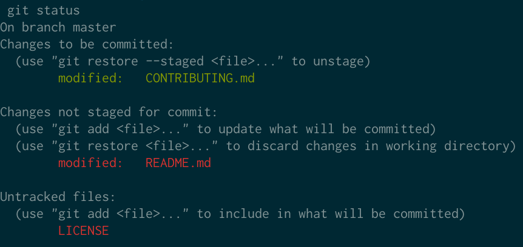
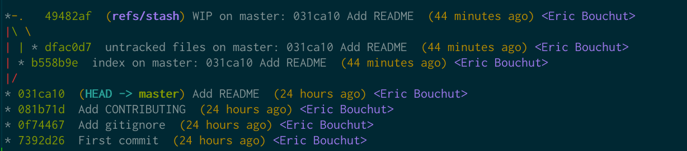
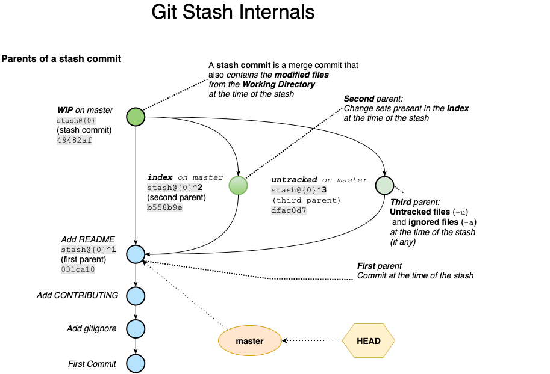

Git stash Internals¶
How does git stash work under the hood?
How to view the untracked files in a stash?
Definition¶
Say you want to set aside your current uncommitted work
in order to fix an urgent bug, or jump on another branch temporarily
then come back to what you were doing later on.
This is where git stash chimes in to provide a way to do this and restore it
later on.
In the example below, my working directory is dirty
which means there are unsaved changes in the working directory.
Switching to another branch without cleaning things up beforehand would bring
these changed files into this other branch.
To prevent that I will use git stash before switching branches, to start off a blank
slate.
Terminology¶
We may need a bit of terminology refresher in this post. Feel free to skip ahead and come back later if needed.
- A tracked file is a file under version control, in other words, git already
knows it because you previously added it to the repository with
git add+git commit. - An untracked file is not under version control yet.
It is not present in the Index nor in the repository.
This means that you have not
git addthengit committhis file. - Ignored files are declared as such in either
.gitignoreor.git/info/exclude.git stashignores them by default unless you use the-aoption. - Working Directory: the directory where you can see and edit files, containing the latest checked-out version of the project from the repository.
- The Index aka. cache or staging area is a temporary storage location
.git/indexwhere git stores each file (in whole or in parts) ready to be committed later on. Think of it like a warehouse where you store a copy of each parcel of a specific shipment when it is ready usinggit add. Once all the parcels required for this shipment are available in the warehouse we send the shipment for delivery usinggit commit.
Example¶
Here is the shell script I used to create the repository for this example.
You may find it helpful to practice the git stash command line options
starting off a pre-configured playground.
mkdir git-stash
cd git-stash
git init
git commit --allow-empty -m "First commit"
echo "temp/" > .gitignore
git add .gitignore
git commit -m "Add gitignore"
echo "# CONTRIBUTING" > CONTRIBUTING.md
git add CONTRIBUTING.md
git commit -m "Add CONTRIBUTING"
echo "# README" > README.md
git add README.md
git commit -m "Add README"
# Staged file: CONTRIBUTING.md
echo "Here is how you can contribute [...]" >> CONTRIBUTING.md
git add CONTRIBUTING.md
# Modified tracked file: README.md
echo "## Installation" >> README.md
# Untracked file: LICENSE
echo "The MIT License (MIT) [...]" > LICENSE
# Ignored file: tmp/stash.out
mkdir temp
touch temp/stash.out
Now let's take a look at the status in the working directory and the Index after running the above shell script.
Git Status¶
Here is the output of git status right before running any of the git stash
command.

Below is the text version of the above image.
git status
On branch master
Changes to be committed:
(use "git restore --staged <file>..." to unstage)
modified: CONTRIBUTING.md
Changes not staged for commit:
(use "git add <file>..." to update what will be committed)
(use "git restore <file>..." to discard changes in working directory)
modified: README.md
Untracked files:
(use "git add <file>..." to include in what will be committed)
LICENSE
There are 3 sections:
- Changes to be committed denotes the content of the
Index.(CONTRIBUTING.md)
- Changes not staged for commit denotes the tracked files that are
modified in the Working Dir (README.md).
- Untracked files denotes the files git does not know about yet (LICENSE)
Git Stash Command¶
This section assumes that:
- Each command starts from the same state described in the Git Status section.
- there is only one stash created and we use stash@{0} to reference it.
The table below describes what files are stashed and where (commit) depending on which git stash command is used.
| Git Stash Command | Modified Tracked File (Working Dir) | Index | Untracked File | Ignored |
|---|---|---|---|---|
README.md |
CONTRIBUTING.md |
LICENSE |
temp/stash.out |
|
git stash |
☑️ stash@{0} |
☑️ stash@{0}^2 |
⤬ | ⤬ |
git stash -u |
☑️ stash@{0} |
☑️ stash@{0}^2 |
☑️ stash@{0}^3 |
⤬ |
git stash -a |
☑️ stash@{0} |
☑️ stash@{0}^2 |
☑️ stash@{0}^3 |
☑️ stash@{0}^3 |
Now, let's take a look at what each git stash command does.
git stash¶
By default, git stash sets aside:
- any tracked file that is modified and not ignored: README.md
- the Index: CONTRIBUTING.md
It does not set aside files that are either untracked or ignored
like respectively LICENSE and temp/stash.out .
git stash
git status
On branch master
Your branch is up-to-date with 'origin/master'.
Untracked files:
(use "git add <file>..." to include in what will be committed)
LICENSE
nothing added to commit but untracked files present (use "git add" to track)
git stash -u¶
To also stash the untracked files, use the -u option.
git stash -u sets aside the:
- Modified and tracked files: README.md
- Index: CONTRIBUTING.md
- Untracked files: LICENSE
That is all the files except the ones that are ignored.
git stash -u
git status
On branch master
Your branch is up-to-date with 'origin/master'.
nothing to commit, working directory clean
git stash -a¶
To also stash the ignored files use the -aoption instead of -u.
git stash -a sets aside all the files, that is:
- Modified files that git is tracking: README.md
- Index: CONTRIBUTING.md
- Untracked files: LICENSE
- Ignored files: temp/stash.out
Stash Stack¶
When adding a stash, git creates a stash commit, pushes it on top of the stash stack.
This shifts existing stash entries downwards (if any).
The reference stash@{0} always denotes the top of the stash stack.
Each time you stash something else it is pushed downwards, hence:
- stash@{0} denotes the most recent stash created,
- stash@{1} denotes the second to last stash created,
- stash@{2} denotes the third to last stash created, and so on.
Now that we know what is stashed, let's take a look at the way it is stored internally.
What is in a stash?¶
Let's figure out what is in our most recent stash.
Let's assume that we ran git stash -u in the example's repository so we end up with this log.

Now let's take a look at the stash@{0} commit.
git log --format=raw -1 stash@{0}
commit 49482afa4ab999deada67c65dc5d38be89aed867
tree 936c8b08ac5a8e91bb6cc38387d2cca93167e0ae
parent 031ca106c13b1603675ea1ce8da8b3da852e27cd
parent b558b9e7621fe508c7c18713cd62c78e80e2017e
parent dfac0d769262fa4b8ea40003d24052c4509a7f3a
author Eric Bouchut <ebouchut@gmail.com> 1627056522 +0200
committer Eric Bouchut <ebouchut@gmail.com> 1627056522 +0200
WIP on master: 031ca10 Add README

The stash commit stash@{0} (49482a) is a merge commit with 3 parents
in this case because we stashed the untracked files, (2 parents by default).
It also contains the non ignored files of the working dir that were modified
at the time of the stash.
Let's meet the parents:
- stash@{0}^1 (031ca10) denotes the first parent of the stash commit.
This was the current commit (HEAD) at the time of the stash.
- stash@{0}^2 (b558b9e) denotes the second parent of the stash commit.
It contains the changesets present in the Index at the time of the stash.
The Index is aka. as the staging area. This is where the files you add with git add are stored before they can be committed.
- stash@{0}^3 (dfac0d7) denotes the third parent of the stash commit.
It contains the untracked files (-u) and ignored files (-a)
present in the working tree at the time of the stash.
git stash creates it only when you use any of the -u or -a options.
Why do we need to dive deep into the inner workings of
git stash?
Up until version 2.32, git did not offer a simple way to list and show the untracked files in a stash commit.
This is why we need to know the git stash internals to do this.
You are now ready to understand what is next.
We will now list the content of the stash.
Files of a Stash Commit¶
Now, let's use the command line to list the files saved in a stash: - modified files in the Working Dir - staged "files" - untracked and ignored files
Modified Files in the Working Dir of a Stash Commit¶
Here is how to list modified files in the Working Dir of the most recent stash commit:
git log -m --first-parent -1 --format='' --name-only 'stash@{0}'
-m) and focus only on the first commit
(-1) of the first parent (--first-parent), that is the stash commit itself.
ℹ️ By default, git log does not display details about any parent of a merge
commit, unless we use -m and when we do use this option, it displays what is
requested for each and every parent. As this is not what we want here, we
restrict only to the first parent..
For whatever reason, even with --name-only, git log
displays non requested information (commit SHA1, date, and author) in addition
to the file names. I noticed this issue in git version 2.32.0.
This is why I use --format='' as a workaround to remove them.
Now, here is how to view what changed in the modified files of the Working Dir of the most recent stash commit:
git log -m --first-parent -1 -p 'stash@{0}'
Staged Files of a Stash Commit¶
The command below lists the staged files of the most recent stash commit.
git log --name-only -1 --format='' 'stash@{0}^2'
In order to get the content of the (changesets in the) Index in this stash commit:
git log -1 -p 'stash@{0}^2'
Untracked Files of a Stash Commit¶
Here is how to list the untracked files in the most recent stash commit.
From git version 2.32
onwards git show now has the --only-untracked option to list the untracked
files of a stash.
ℹ️
This also lists the ignored files if you used git stash -a to also stash the ignored files.
git stash show --only-untracked --name-only 'stash@{0}'
Before git version 2.32, we should have used instead one of the following 2 alternatives:
git show --name-only 'stash@{0}^3:'
:) at the end.
git ls-tree -r 'stash@{0}^3' --name-only
Here is how to view the content of the untracked files (and ignored file(s) if any) in the most recent stash commit.
From git version 2.32 onwards you can use the --only-untracked option of git show.
git stash show --only-untracked -p 'stash@{0}'
Before git version 2.32, use instead:
git log -p 'stash@{0}^3'